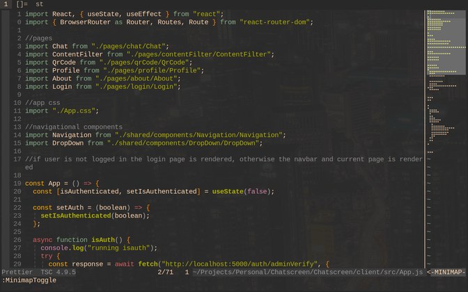
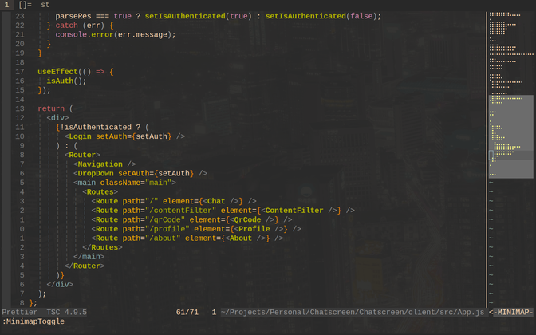
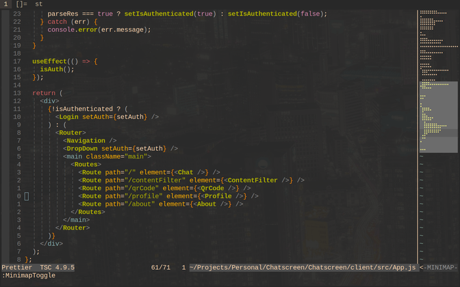
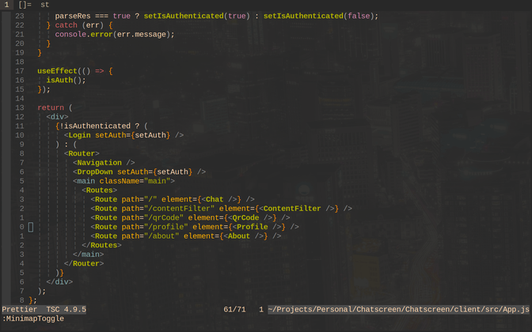

<
MINI MAP:
(mini-map for vim)
Made by wxfr
Watch Video
Open up Mini Map - Press 'ENTER' or
'CTRL + m'

Move into the map - press 'CTRL + l"

Move up and down the map - 'j' and 'k'
Moving in the map window is much quicker

Move back to the main window - press 'CTRL + h'

Close the Mini Map window - press 'ENTER'

<